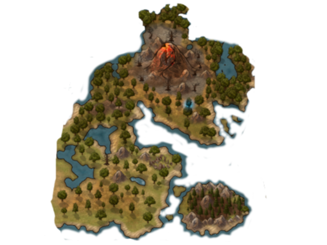

Bosque AntigoO Bosque Antigo é uma região selvagem dominada por um imponente Rei Leão e marcada pela presença de um vulcão ativo. O ambiente hostil é composto por campos de pedregulho, vegetação rasteira e uma fauna feroz, onde superpredadores lutam diariamente pelo domínio, enquanto herbívoros sobrevivem em bandos ou por agilidade. A gritaria das batalhas ecoa pela terra, criando um cenário de constante tensão. Ao Sudoeste, uma ilha cercada por mata fechada abriga animais que acumulam galhos para moldar os caminhos dos rios, oferecendo um contraste de estratégia em meio à brutalidade do bosque. É um território implacável, governado pela força e pela astúcia.
Mapa

Condado O Condado é uma terra de paz e serenidade, dominada por vastas planícies e praias douradas, onde a vegetação litorânea floresce sob o céu aberto. Em contraste, uma floresta calma abriga predadores silenciosos, geralmente ativos à noite, enquanto os herbívoros adaptaram-se, com couraças mais espessas ou maior maturidade, para resistir aos perigos. As montanhas do condado, ricas em metais preciosos, são repletas de grandes aves, cujos cânticos ecoam pela região. O ambiente é marcado por uma melancolia sutil, onde as praias vazias dão a sensação de solidão, e as estrelas parecem observar cada movimento. Ao norte, uma floresta dominada por artrópodes gigantes é um lugar evitado por todos, devido aos mistérios de uma cidade perdida, escondida nas profundezas dessa vegetação escura e abandonada, a qual ninguém ousa explorar, nem mesmo os mais corajosos.
Norte Frio O Norte Frio é uma terra implacável, onde uma tempestade de neve constante esconde uma paisagem de gelo seco e pedras congeladas. As montanhas cobertas de neve se erguem como colossos, com picos de gelo e espinhos formando barreiras naturais em cada entrada de caverna, criando um labirinto perigoso. No coração desse deserto gelado, a temperatura extrema torna a sobrevivência impossível sem as adaptações necessárias: todas as criaturas, desde os predadores grandes e pacientes até os herbívoros gigantes, possuem penas ou pelos espessos para suportar o frio feroz. Os rastros de sangue são frequentemente encontrados, vestígios das caçadas impiedosas que ocorrem nas cavernas, onde os animais inteligentes formam grupos para tirar proveito das presas mais vulneráveis. As montanhas, ocupadas por corujas, golens e aves de rapina, aguardam o momento certo para atacar. O grande predador que caminha pelo deserto gelado é temido por todos, uma força imparável que percorre o território à procura de suas próximas vítimas. Ao sul, um pântano misterioso se estende, repleto de flores e ervas medicinais, mas infestadas de crocodilos, cobras, sapos e insetos gigantes, tornando a travessia um desafio mortal para quem ousa se aventurar por essa região infestada.

Campos de Ouro Os Campos de Ouro são uma vasta região de terra fértil, considerada a mais rica da ilha, onde as estações do ano favorecem o crescimento de uma vegetação exuberante. A terra é perfeita para a vida, sendo permeada por vilas e pequenas cidades povoadas por diversos povos, que se beneficiam dos recursos abundantes. Os herbívoros prosperam nesse ambiente, desde os de tamanho menor até os maiores, que se alimentam e se multiplicam rapidamente. A região também é lar de predadores médios, que caçam o que está disponível, sem especialização. Sua fertilidade atrai animais de outras partes da ilha, em busca de abrigo e alimento durante as mudanças sazonais. Minérios e rochas preciosas estão espalhados pela terra e montanhas, escondendo ruínas e cavernas que guardam mistérios antigos. Ao sul, um deserto desconhecido estende-se como uma barreira inexplorada, enquanto a floresta fechada, que se estende mais ao norte, serve de refúgio para animais maiores, que se protegem da presença dos predadores de lagos e riachos, especializados na pesca de peixes e nas águas das regiões mais isoladas.

Ilha da Caveira A Ilha da Caveira é um lugar isolado e inóspito, afastada de qualquer rota comum e envolta por uma densa névoa que dificulta a aproximação. Suas águas são traidoras, repletas de criaturas desconhecidas, muitas das quais são verdadeiros monstros marinhos, prontos para devorar qualquer intruso que ouse se aproximar. Esta ilha é um território endiabrado, onde a morte permeia todos os cantos. Quem ousa pisar em suas praias nunca retorna. A fauna local é composta por predadores cruéis, acostumados a devorar tudo o que veem pela frente, com uma predileção particular por humanos, que são considerados as presas mais fáceis. As criaturas que habitam a ilha são fora dos padrões normais, gigantes e poderosas, com habilidades adaptadas tanto para o ataque quanto para a defesa. Pilhas de ossos e restos de carne se acumulam em várias partes da ilha, lembrando a carnificina que ali ocorre constantemente. Carniceiros e aproveitadores vagam pelas cavernas, em busca de qualquer oportunidade para saquear ou caçar. A ilha é repleta de cavernas e túneis, muitos deles contendo minérios únicos, que atraem aqueles que buscam riquezas. Também existem túneis secretos que conectam a ilha a vilarejos orcs e, segundo rumores, há passagens tão grandes que podem até ligar a Ilha da Caveira a outras ilhas, fazendo dela um ponto estratégico de trevas e mistérios.

Floresta dos Pinheiros A Floresta de Pinheiros é uma vasta e selvagem floresta, rica em flora e biodiversidade, que se estende por toda a região. O ambiente é denso, com árvores altas e espessas, criando uma cobertura verdejante onde animais de pelos densos dominam, além de mamíferos e répteis rápidos que são peritos em escalar as árvores. A vegetação é composta por uma diversidade impressionante de plantas e arbustos, proporcionando abrigo para uma grande quantidade de herbívoros grandes, que se alimentam das folhas e raízes. Porém, a floresta é também traiçoeira para os menores; criaturas e predadores mais astutos utilizam as armadilhas naturais do ambiente, como tocas antigas, buracos disfarçados e gramas com espinhos, além dos aromas de plantas que atraem presas desavisadas. Criaturas inteligentes, como caçadores em bando, patrulham a floresta, procurando por qualquer oportunidade de capturar presas. Ao norte da floresta, um clima frio domina a região, onde uma ilha isolada é habitada exclusivamente por herbívoros, rica em pedras preciosas e joias raras. Ao sul, as paisagens se transformam em campos de vegetação baixa, onde predadores corredores e vorazes caçam suas presas em alta velocidade. No sudeste, a floresta dá lugar a um reino construído pela força, governado por um ditador profano que proclamou uma profecia de libertação para seus súditos. No entanto, a verdadeira mensagem é que a derrota é o destino dos fracos, e os oprimidos estão destinados a sucumbir ao poder tirânico.
Cavernas
As cavernas são refúgios naturais que oferecem abrigo e rotas seguras para animais que preferem o ambiente subterrâneo. Esses locais variam de ambientes úmidos e cheios de teias de aranha a espaços secos repletos de aglomerados de insetos. Muitas criaturas noturnas utilizam as cavernas como refúgio durante o dia, protegendo-se de predadores ou do clima hostil da superfície. Além disso, as cavernas servem como uma alternativa essencial de locomoção, conectando diferentes áreas da ilha sem a necessidade de atravessar o perigoso mar. Com minérios preciosos em abundância, elas são ricas em recursos que atraem não apenas animais, mas também exploradores em busca de tesouros escondidos.
Ruínas
As ruínas são vestígios impressionantes de antigos povos que habitaram a ilha há eras, carregando segredos e mistérios que ninguém mais é capaz de replicar. Essas estruturas são preciosas por guardarem recursos valiosos e mecanismos antigos, ocultando a verdade sobre a origem da ilha e o caminho para a ascensão. Histórias esculpidas nas pedras contam sobre criaturas criadas para proteger esses locais, dotadas de habilidades únicas e bênçãos especiais que só são concedidas àqueles que as enfrentam e as derrotam. Para desvendar o próximo passo rumo à ascensão, é necessário decifrar os enigmas e compreender os feitos dos antigos que já superaram esse desafio.
Mar
O mar é uma vastidão que circunda grande parte da ilha, abrigando uma diversidade impressionante de biomas. Recifes de corais coloridos, correntes marinhas traiçoeiras, cavernas de cristais cintilantes e áreas vulcânicas submersas compõem o cenário, junto com cemitérios de navios, onde histórias de naufrágios permanecem enterradas. A cadeia alimentar é dinâmica, com uma infinidade de predadores e presas coexistindo em um ambiente hostil. Aventurar-se para além das bordas é uma tarefa quase impossível, pois as águas são guardadas por criaturas colossais que brilham intensamente no escuro. Suas luzes são hipnotizantes, mas também são o último vislumbre de quem ousa desafiar seu território antes de ser devorado.

Abismo
O Abismo é a região mais profunda e misteriosa do Ark, onde a luz do sol nunca alcança. Nas sombras perpétuas, criaturas gigantes, adaptadas à pressão e à escuridão, dominam as águas. Apesar de menos densas, possuem truques mortais para capturar tanto presas desavisadas quanto exploradores incautos. A área é rica em minérios raros e recursos naturais de valor inestimável, mas cada tentativa de extração é repleta de perigos. Lendas falam de um colossal Leviatã que habita as profundezas, guardando um segredo terrível que pode mudar o destino de quem ousar descobri-lo.